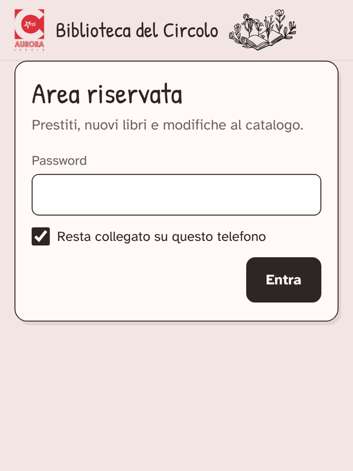
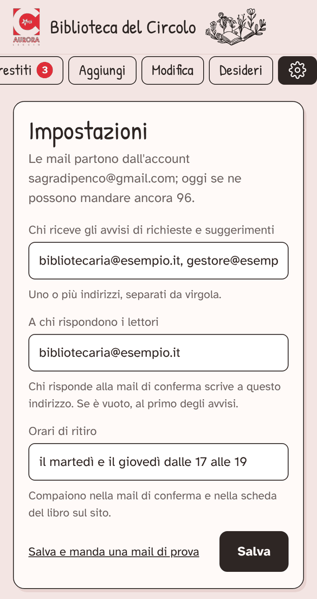
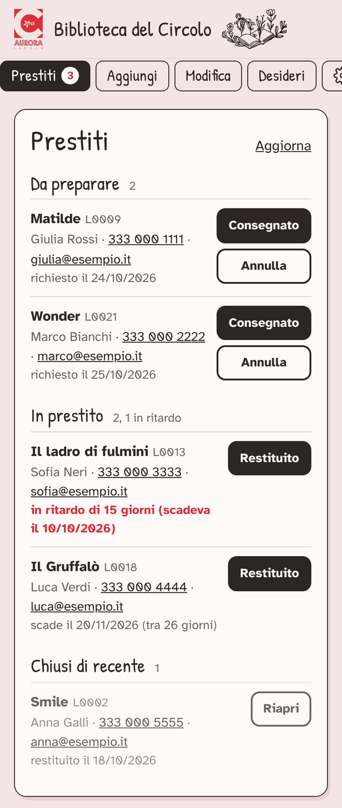
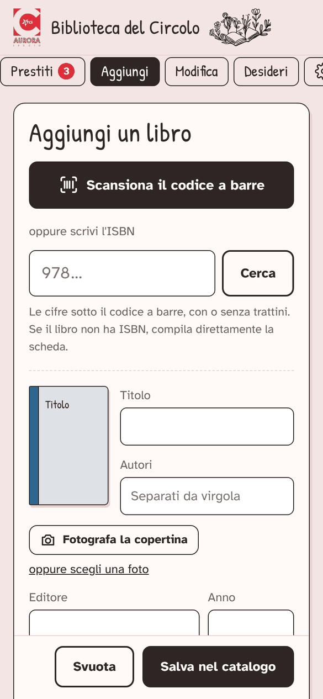
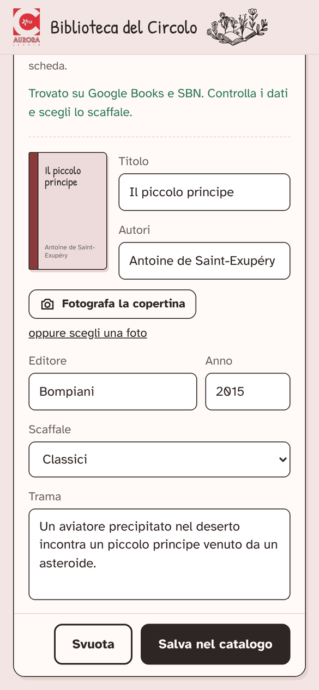
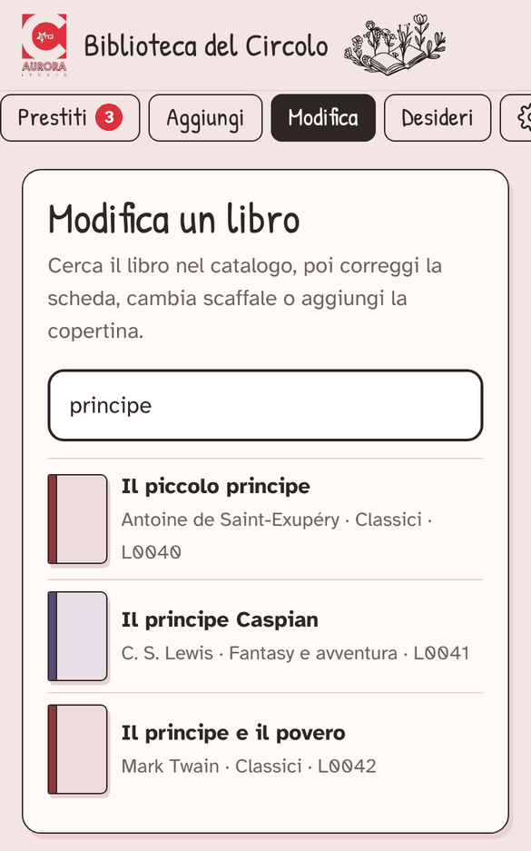
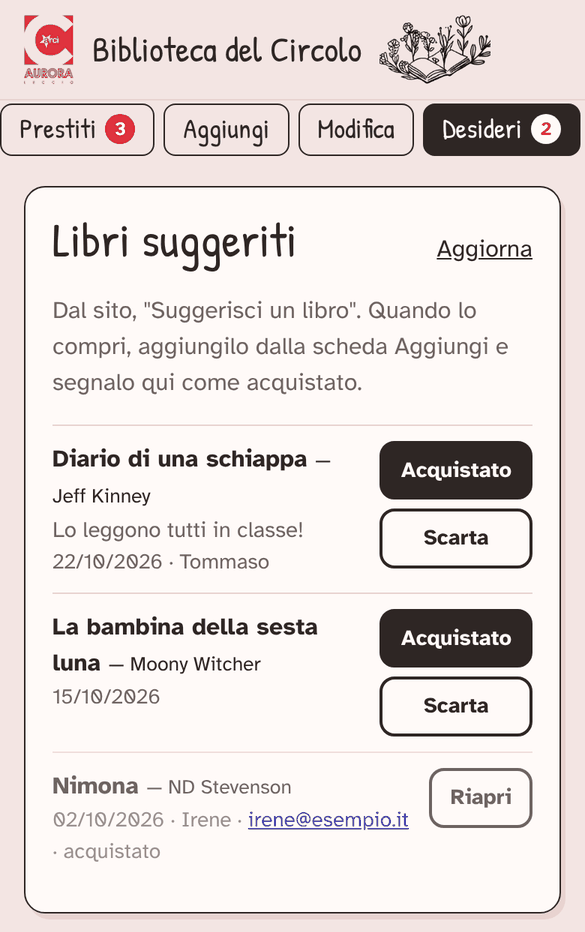

- Catalogo
- circolo-aurora.github.io/biblioteca
- Area riservata
- circolo-aurora.github.io/biblioteca/admin.html
- Password

Guida per la bibliotecaria
Il catalogo della biblioteca è online: chi legge cerca un libro e lo chiede in prestito dal telefono. A te arriva una mail; nell'area riservata segni quando il libro viene ritirato e quando torna. Date, scadenze e disponibilità sul sito si aggiornano da sole.
- Primo accesso
- Impostazioni
- Arriva una richiesta
- Prestiti
- Nuovi libri
- Modifiche
- Desideri
- Le mail
- Problemi
1. Primo accesso
Una volta sola, dieci minuti.
- Apri circolo-aurora.github.io/biblioteca/admin.html. Ci arrivi anche dal catalogo: in fondo alla pagina c'è Area riservata.
- Scrivi la password e lascia la spunta su Resta collegato su questo telefono. Tocca Entra.
- Da qui in poi quel telefono se la ricorda: quando riapri l'area riservata entri subito, senza riscriverla.
- Se vuoi, metti il catalogo tra le app. Android: Chrome, menu ⋮ → Aggiungi a schermata Home → Installa. iPhone: Safari, ••• in basso → Condividi → Aggiungi alla schermata Home. L'app è la stessa per tutti: per gestire i prestiti aprila e tocca Area riservata in fondo alla pagina.
- Vai nelle Impostazioni e metti la tua mail: è il passo più importante.
L'accesso resta memorizzato sul dispositivo dove hai scritto la password. Puoi entrare anche da un altro telefono, da un tablet o dal computer: scrivi la password lì, una volta, e anche quel dispositivo se la ricorda. Su un dispositivo che non è tuo, alla fine tocca Esci e dimentica la password su questo telefono, in fondo alla pagina.

2. Impostazioni: la tua mail
Tocca l'ingranaggio ⚙, l'ultimo tasto della fila in alto.
- Chi riceve gli avvisi di richieste e suggerimenti: scrivi la tua mail. Per un periodo puoi lasciare anche quella del gestore dell'app, separate da una virgola: gli avvisi arrivano a tutti e due.
- A chi rispondono i lettori: la tua mail. Quando qualcuno risponde alla mail di conferma del prestito, scrive a te.
- Orari di ritiro: per esempio «il martedì e il giovedì dalle 17 alle 19». Compaiono nella mail di conferma e nella scheda del libro sul sito.
- Tocca Salva e manda una mail di prova. Entro qualche minuto ti arriva «Prova mail della biblioteca», da sagradipenco@gmail.com. Se non la vedi, guarda nello spam e segnala Non è spam: così anche le richieste vere arrivano in posta in arrivo.
Le impostazioni si cambiano quando vuoi, con Salva.

3. Quando arriva una richiesta
- Ti arriva una mail «Nuova richiesta di prestito: titolo» con il libro, lo scaffale, il nome, la mail e il telefono di chi lo chiede.
- Sul sito il libro diventa Prenotato: nessun altro può chiederlo.
- Nell'area riservata la scheda Prestiti mostra un pallino rosso con il numero di cose da fare.
Cosa fai tu: prendi il libro dallo scaffale, mettilo da parte e avvisa la persona che è pronto. Puoi rispondere direttamente alla mail (la risposta va a lei) oppure telefonare: in Prestiti telefono e mail si toccano e partono la chiamata o la mail.
Al lettore arriva in automatico solo la mail di conferma della richiesta. Che il libro è pronto glielo dici tu.
4. La scheda Prestiti
Tre gruppi, dall'alto in basso:
Da preparare
- Consegnato quando la persona passa a ritirare il libro. Il prestito parte da oggi e scade tra due mesi; sul sito il libro risulta In prestito.
- Annulla se la persona rinuncia o non passa. Il libro torna Disponibile. Ti chiede conferma.
In prestito
- In ordine di scadenza. Quelli in ritardo sono scritti in rosso, con i giorni di ritardo: chiama o scrivi a chi lo ha.
- Restituito quando il libro torna: sul sito ridiventa disponibile.
- Promemoria della scadenza: quando manca una settimana, il lettore vede un pallino rosso sull'omino in alto a destra dell'app (la sua pagina «I miei libri»). Mail di promemoria automatiche per ora non ce ne sono: se un libro è in ritardo, lo vedi in rosso qui e contatti tu la persona.
Chiusi di recente
- Gli ultimi restituiti e annullati. Riapri rimette il libro in prestito: serve se hai toccato Restituito per sbaglio.
Aggiorna, in alto a destra, ricarica l'elenco.

5. Aggiungere un libro
- Scheda Aggiungi → Scansiona il codice a barre. Si apre la fotocamera (la prima volta il telefono chiede il permesso: Consenti).
- Inquadra il codice a barre sul retro del libro, quello che comincia con 978. Appena lo legge, la ricerca parte da sola.
- Senza fotocamera: scrivi le cifre sotto il codice a barre (l'ISBN) e tocca Cerca.
- La scheda si compila da sola: titolo, autori, editore, anno, trama e, se c'è, la copertina. Controlla e correggi se serve.
- Scegli lo Scaffale: senza scaffale non si salva.
- Se manca la copertina: Fotografa la copertina, inquadrala nel riquadro e scatta. Oppure scegli una foto dalla galleria. La × sull'immagine la toglie.
- Salva nel catalogo. Il messaggio verde ti dà il codice del libro (es. L0822). Lo scaffale resta impostato per il libro dopo: comodo quando sistemi una pila dello stesso scaffale.

Libri senza codice a barre
I libri vecchi spesso non ce l'hanno. Scrivi tu titolo e autori (editore e anno se ci sono), scegli lo scaffale, fotografa la copertina e salva.
Doppioni
Se il libro è già in catalogo l'app ti avvisa («… è già in catalogo (L0123)»). Se è davvero una seconda copia, tocca Aggiungilo comunque.

6. Modificare un libro
- Scheda Modifica: scrivi un pezzo del titolo, l'autore o il codice (L0123).
- Tocca il libro: si apre la stessa scheda di Aggiungi, con in più ISBN e Stato.
- Correggi quello che serve (scaffale sbagliato, autore, copertina nuova) e tocca Salva nel catalogo. Ripristina rimette i dati com'erano prima delle tue modifiche.
Rimuovi dal catalogo (in basso a sinistra): per un libro perso, rovinato o regalato. Ti chiede il motivo, facoltativo. Il libro sparisce dal sito ma resta in un elenco a parte nel foglio («Rimossi»): se serve, il gestore dell'app lo recupera.
Lo Stato (disponibile, prenotato, in prestito) di solito non va toccato: lo cambiano da soli i tasti della scheda Prestiti. Usalo solo per correggere un errore.

7. Desideri
Qui arrivano i libri che i lettori suggeriscono dal sito (ti arriva anche una mail «Libro suggerito»). Il pallino rosso conta quelli nuovi.
- Acquistato quando lo compri o ti viene regalato; poi lo aggiungi dalla scheda Aggiungi.
- Scarta se non fa per la biblioteca.
- Riapri per rimetterlo tra i nuovi.
Se chi l'ha suggerito ha lasciato la mail, toccala per scrivergli che il libro è arrivato.

8. Le mail, in breve
Arrivano a te
- Nuova richiesta di prestito: rispondendo, scrivi a chi ha chiesto il libro.
- Libro suggerito: un nuovo desiderio.
Arrivano al lettore
- Richiesta di prestito: la conferma, con gli orari di ritiro e il link alla sua pagina «I miei libri». Se risponde, scrive a te.
Per il momento le mail partono dall'indirizzo sagradipenco@gmail.com, con il nome «Biblioteca del Circolo ARCI Aurora»: se le cerchi nella posta, cerca quell'indirizzo. A chi arrivano lo decidi nelle Impostazioni.
Promemoria automatici della scadenza via mail per ora non ci sono: c'è solo il pallino rosso nell'app del lettore.
9. Se qualcosa non va
Compare «Il server si sta avviando, ancora qualche secondo…»
È normale la prima volta della giornata: può volerci una ventina di secondi. Poi va veloce.
Mi chiede di nuovo la password.
La password è stata cambiata, oppure hai toccato «Esci». Chiedila al gestore dell'app e spunta di nuovo «Resta collegato».
Non mi arrivano le mail delle richieste.
Guarda nello spam (il mittente è sagradipenco@gmail.com). Poi in Impostazioni controlla che la tua mail sia scritta giusta e usa «Salva e manda una mail di prova».
Un lettore dice che non gli è arrivata la conferma.
Forse ha scritto male la mail, o è finita nello spam. La richiesta però è arrivata: la vedi in Prestiti. Contattalo per telefono.
Lo scanner non legge il codice a barre.
Serve luce: tieni il libro fermo a 10-15 cm, con il codice dritto dentro l'inquadratura. Se proprio non va, chiudi e scrivi l'ISBN a mano.
La fotocamera non si apre.
Probabilmente il permesso è stato negato. Nelle impostazioni del browser cerca «Fotocamera» e consenti l'accesso per questo sito, poi ricarica la pagina.
Ho toccato Restituito per sbaglio.
Il prestito è in «Chiusi di recente»: tocca Riapri e torna in prestito.
Ho toccato Annulla per sbaglio.
Il libro è tornato disponibile. Chiedi alla persona di rifare la richiesta dal sito, oppure, se passa a ritirarlo subito, tocca Riapri in «Chiusi di recente»: il prestito parte da oggi.
Sul sito un libro ha lo stato sbagliato.
Se c'è un prestito, sistemalo dalla scheda Prestiti. Se non c'è, apri il libro in Modifica e correggi lo Stato.
Ho cambiato un libro ma sul sito non lo vedo.
Ricarica la pagina del catalogo (sul telefono, tira giù la pagina). Se dopo qualche minuto non cambia, avvisa il gestore dell'app.
Tutto il resto.
Scrivi al gestore dell'app: i dati sono in un foglio Google che gestisce lui, e ogni modifica fatta dall'area riservata resta registrata.